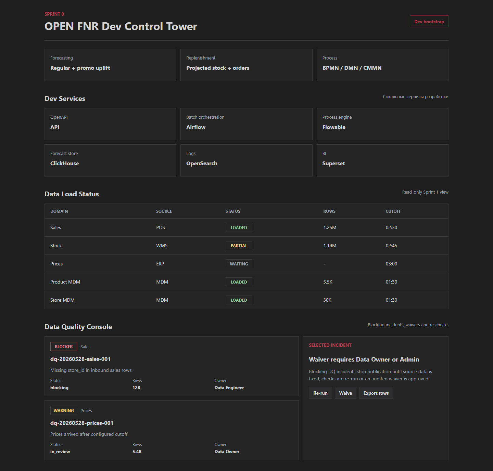
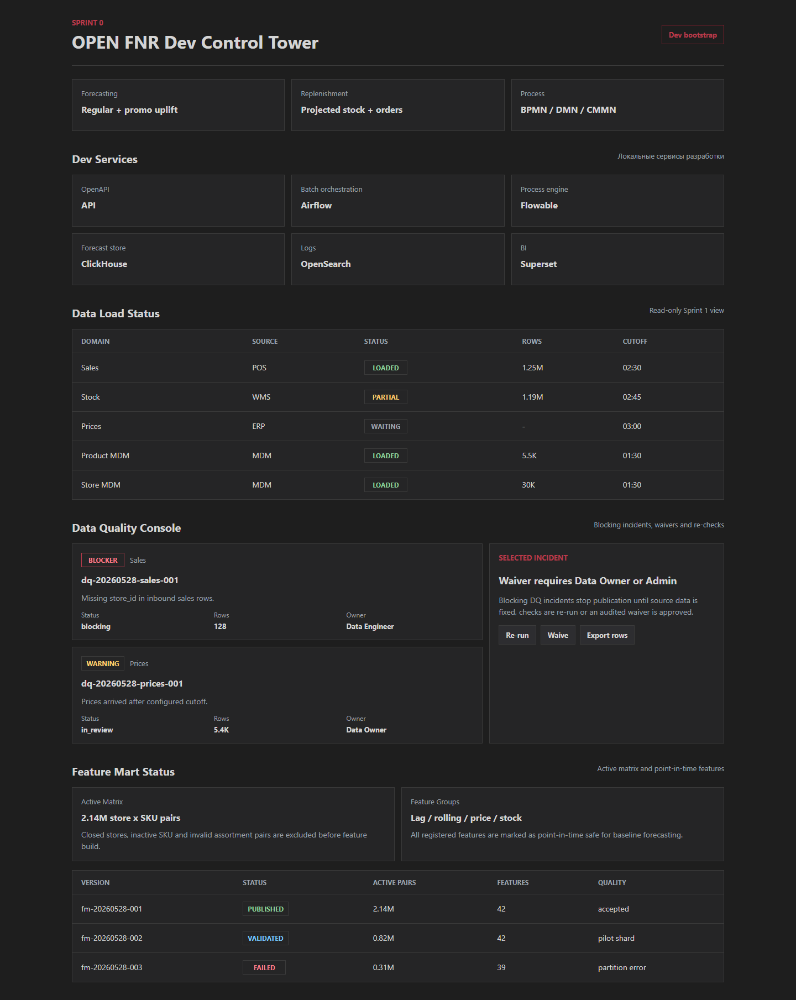
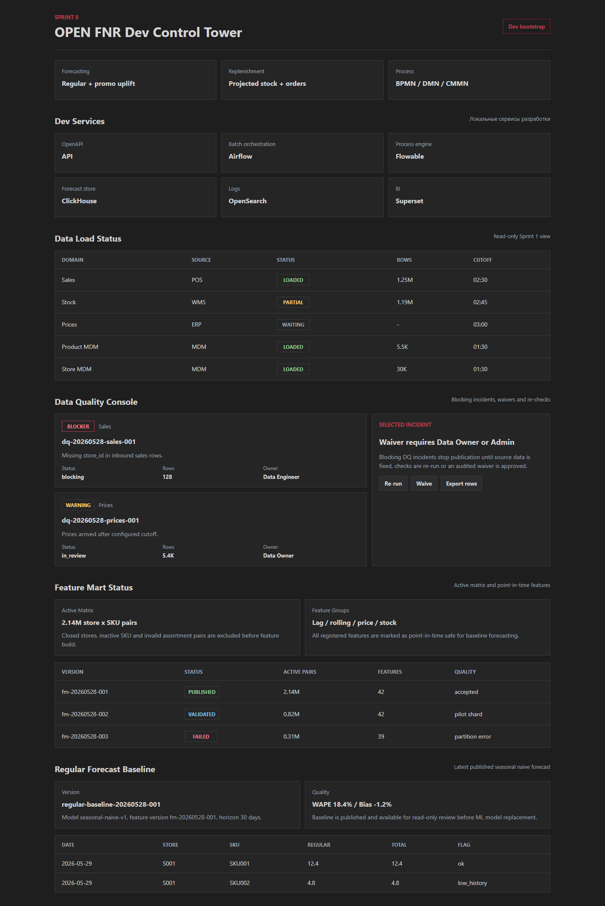
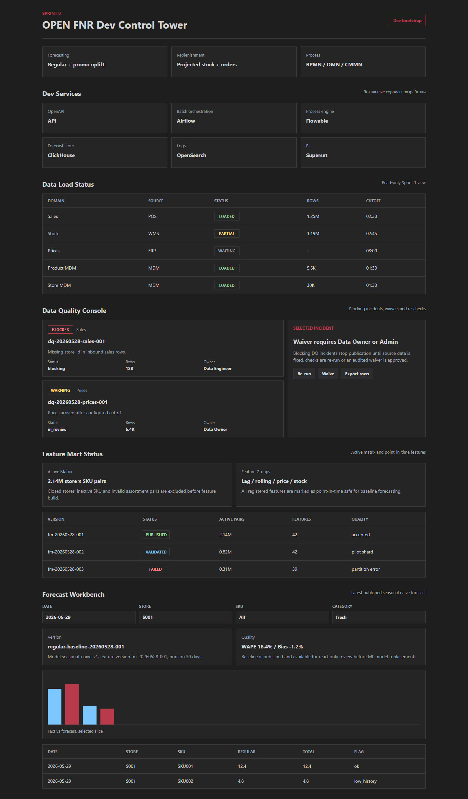

Для бизнеса
Появляется видимость: какие данные пришли, какие ошибки блокируют прогноз, какой forecast опубликован.
OPEN FNR / Спринты 0-5 / Блоковая презентация
Этот блок превращает проект из набора документов в первый рабочий контур: загрузка данных, контроль качества, feature mart, регулярный baseline forecast и пользовательский экран анализа прогноза.
Появляется видимость: какие данные пришли, какие ошибки блокируют прогноз, какой forecast опубликован.
Forecast Planner получает первый рабочий Workbench для просмотра прогноза, метрик и среза SKU-store-date.
Заложены API, UI, BPMN/DMN/CMMN, тесты, отчёты, контракты данных и контекст восстановления.
Product Increment
| Спринт | Модуль | Назначение | Главный бизнес-результат |
|---|---|---|---|
| Sprint 0 | Dev foundation | Локальная инфраструктура, backend, frontend, процессные артефакты, UTF-8 gate. | Команда может развивать систему воспроизводимо. |
| Sprint 1 | Data Ingestion | Контракты продаж, остатков, цен, MDM, календаря и batch status. | Появляется управляемая точка входа данных. |
| Sprint 2 | Data Quality | DQ rules, incidents, waiver, blocking/non-blocking severity. | Ошибки данных становятся видимыми и управляемыми. |
| Sprint 3 | Feature Mart | Active matrix, feature versions, point-in-time safe features. | Готова основа признаков для регулярного прогноза. |
| Sprint 4 | Regular Baseline | Первый baseline forecast, WAPE/Bias, публикация версии прогноза. | Есть первый прогноз, который можно сравнивать с ML. |
| Sprint 5 | Forecast Workbench | Фильтры, таблица, fact vs forecast panel, review process. | Forecast Planner получает рабочий интерфейс анализа. |
User Journey
Пользователь видит домены данных, источники, статус, объём строк и cutoff.
Результат: понятно, можно ли переходить к DQ и прогнозу.
Data Engineer и Data Owner видят blocker/warning, affected rows, owner и возможные действия.
Результат: blocker останавливает публикацию, waiver требует роли и причины.
Команда видит active matrix, feature version, качество и failed partitions.
Результат: прогноз опирается на воспроизводимые признаки.
Forecast Planner фильтрует forecast slice, смотрит WAPE/Bias, таблицу и fact vs forecast.
Результат: прогноз можно анализировать и готовить к review.
UI Evidence

Экран показывает Data Load Status и DQ-инциденты: severity, affected rows, owner, waiver/re-run/export actions.
UI Evidence

Экран показывает active matrix, feature groups, feature versions, quality status и failed partition.
UI Evidence

Экран показывает forecast version, seasonal naive baseline, WAPE/Bias и строки прогноза.
UI Evidence

Экран показывает фильтры, fact vs forecast panel, таблицу прогноза и quality flags.
Business Processes
| Процесс | Тип | Что делает | Роли | Ключевой результат |
|---|---|---|---|---|
data_load_monitoring_process |
BPMN | Следит за загрузкой batch, переводит failed/partial в incident. | Data Engineer, Data Owner | Данные не попадают дальше без статуса и audit. |
dq_check_process |
BPMN | Запускает DQ rules, блокирует публикацию при critical incidents. | Data Engineer, Data Owner | Качество данных становится управляемым gate. |
data_quality_incident_case |
CMMN | Ведёт triage, исправление source data и waiver approval. | Data Engineering, Data Owner, Admin | Исключения не теряются и имеют владельца. |
feature_build_process |
BPMN | Строит active matrix, feature mart, валидирует и публикует feature version. | Data Engineer, Data Scientist | Прогноз получает воспроизводимый набор признаков. |
regular_forecast_run_process |
BPMN | Считает baseline, валидирует WAPE/Bias и публикует forecast version. | Data Scientist, Forecast Planner | Появляется первая опубликованная версия прогноза. |
forecast_review_process |
BPMN | Определяет, нужен ли review прогноза, и создаёт задачи по аномалиям. | Forecast Planner, Category Manager | Планировщик получает управляемый review workflow. |
Decision Rules
dq_severity_decision и publication_block_decision определяют, что блокирует публикацию и когда нужен waiver.
active_matrix_inclusion_decision решает, входит ли пара магазин-SKU в расчёт.
forecast_publish_eligibility_decision проверяет WAPE, Bias и blocking DQ перед публикацией.
forecast_review_required_decision определяет, когда Forecast Planner должен вручную проверить срез.
Developer Map
| Слой | Где смотреть | Назначение |
|---|---|---|
| Backend API | apps/backend/open_fnr_api |
Контракты ingestion, DQ, feature mart, forecast, workbench. |
| Frontend UI | apps/frontend/src |
Dev Control Tower, DQ Console, Feature Mart, Forecast Workbench. |
| Process Engine | processes/* |
BPMN/DMN/CMMN артефакты для Flowable OSS. |
| Storage | infra/dev/postgres/init, infra/dev/clickhouse/init |
Metadata, DQ incidents, feature versions, forecast versions, forecast store. |
| Tests | tests/backend, tests/data, tests/process, tests/quality |
API, formulas, data rules, process artifacts, encoding gate. |
| Reports | docs/test-reports, docs/presentations |
HTML-доказательства тестирования и блоковые презентации. |
Quality Gates
Backend, data, process, forecast formulas, encoding quality gate.
React/Vite production build проходит.
DQ, Feature Mart, Baseline Forecast, Forecast Workbench.
| Отчёт | Ссылка |
|---|---|
| Sprint 2 Data Quality | HTML report |
| Sprint 3 Feature Mart | HTML report |
| Sprint 4 Regular Baseline | HTML report |
| Sprint 5 Forecast Workbench | HTML report |
Limitations And Next